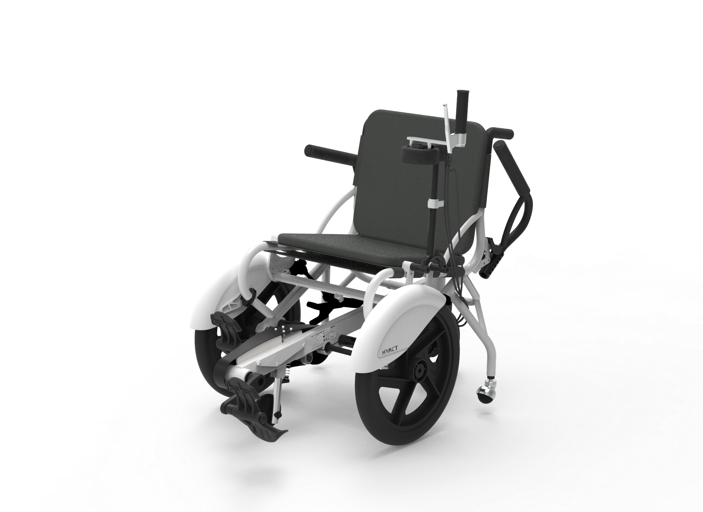
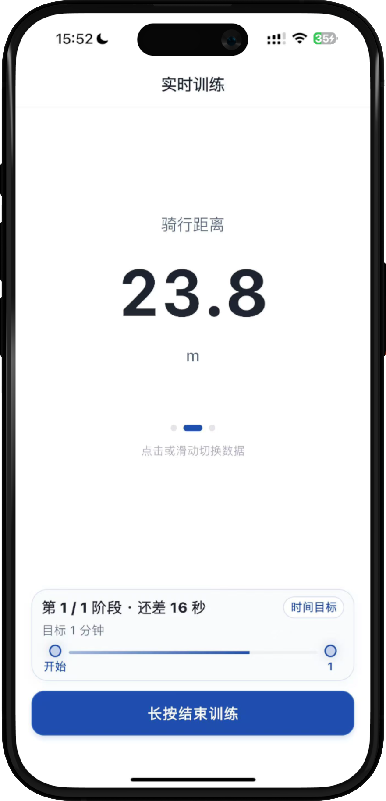
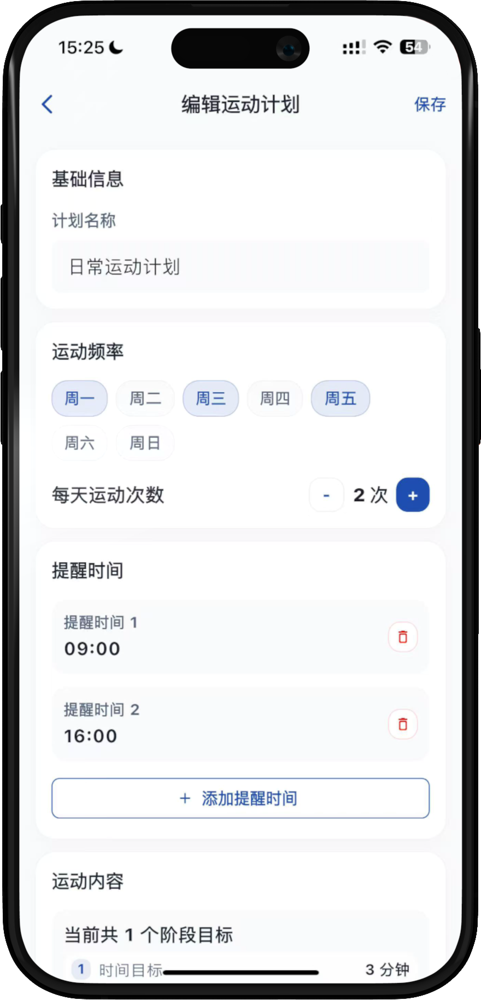
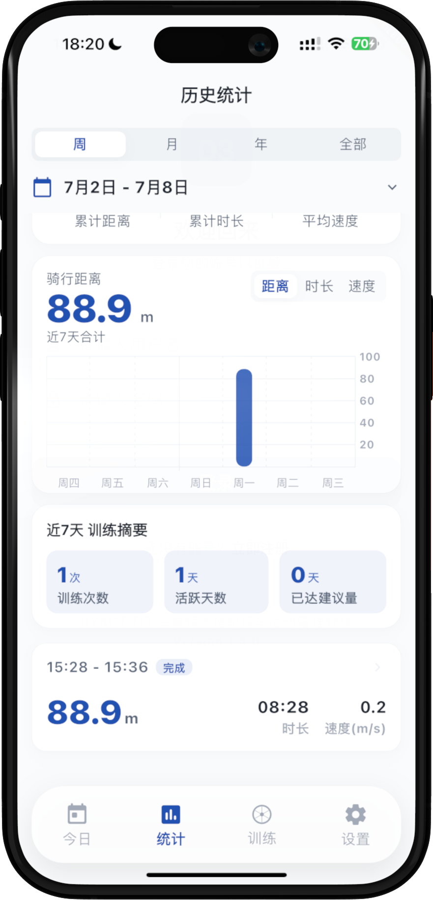
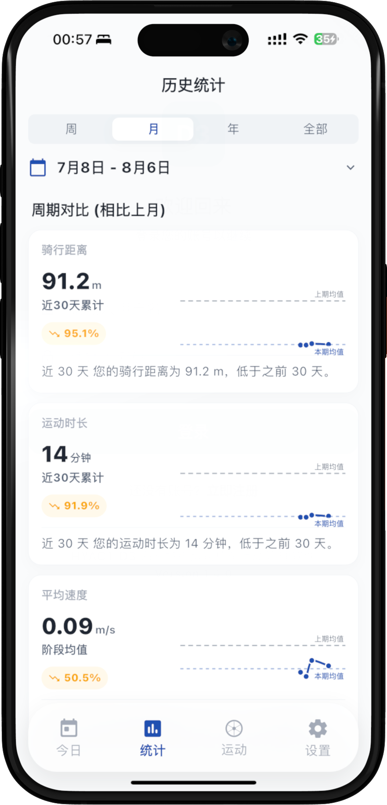
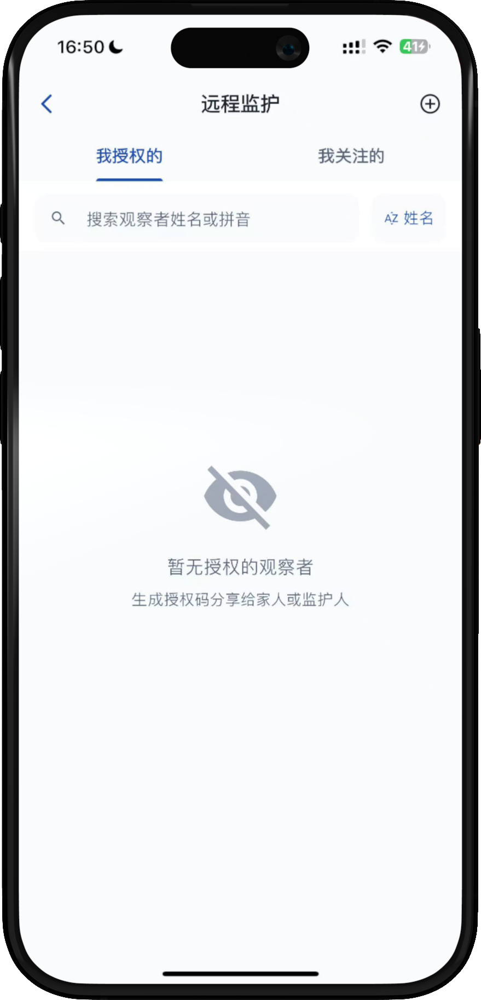
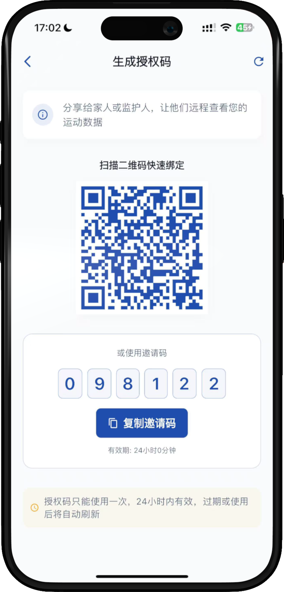
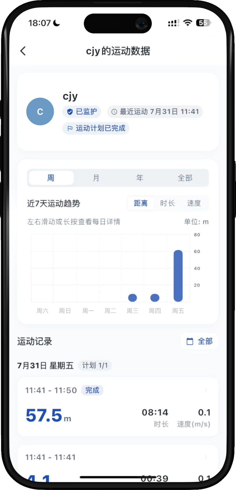

一台纯机械的骑行训练设备第一次要联网——D2 要做的不是加功能，而是从零定义：康复设备联网之后，应该给用户提供什么样的数字体验？
角色与协作本人负责 App 的体验逻辑定义、功能规划与交互设计；蓝牙通信、后端数据系统与硬件电路由对应工程师团队完成。此外，我定义了完整的交互逻辑与页面结构，借助 LLM 工具将设计意图转化为可运行的高保真原型，以消除设计与研发之间的沟通摩擦。该原型方案已由公司完成软件著作权登记。

↑ D2 设备外观渲染图
D1 是一台纯机械的骑行训练设备，患者练了多久、练得怎么样全靠自己感觉，没有任何数据反馈。D2 解决的核心问题不是硬件升级，而是从零定义：一台康复设备联网之后，应该给用户提供什么样的数字体验？
这要求我们在设计初期明确三个边界：采集了参数后要给用户呈现什么数据（避免患者认知过载）；如何让患者感受到进展而非压力（康复患者易因数据焦虑或缺乏正反馈而放弃）；如何兼容复杂的商业场景与多角色流转（B端/C端/租赁模式并存）。
D2 构建了一套围绕“完成感”与“周期对比”的温和训练逻辑：




设备最终可能流向 B 端机构共用，也可能被 C 端购买或租赁。在商业模式不确定的情况下，强行的“设备-账号绑定”体验会极其糟糕。
因此，系统采用了数字码与二维码两种绑定方式：用户扫码即可获取当前设备的使用权限，适应不同场景的流转。同时，康复过程往往需要家属和治疗师的参与，他们也可以通过扫码与患者账号建立绑定关系——仅限查看患者的训练进展，无法进行修改，在“跨角色监控”和“患者隐私控制”之间画下了清晰的边界。


